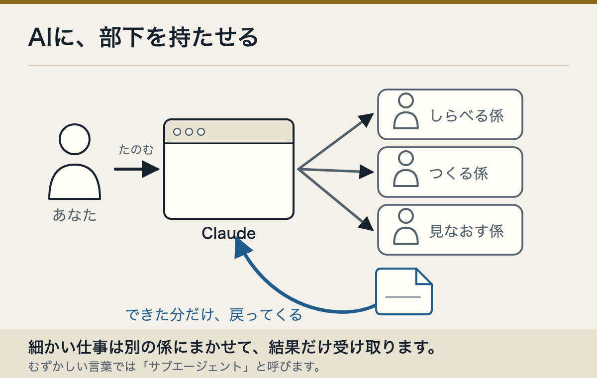

ツバキリ商会の名簿
たとえば「調べる人」「文章を直す人」「できあがりを確かめる人」に分けます。頼むのは、まとめ役への一度だけです。

この仕事を分けて手伝う、調べる人・文章を直す人・できあがりを確かめる人を作ってください。私が読める日本語で役割を説明してから作ってください。この頼み方をうちで試しました。Claudeは3人の役割と使える道具を日本語で説明したあと、「ファイルを作っていいですか」と聞いてきました。「許可」を押した先は、まだ確かめていません。
公式には、部下の役割や使える道具を決められることが書かれています。